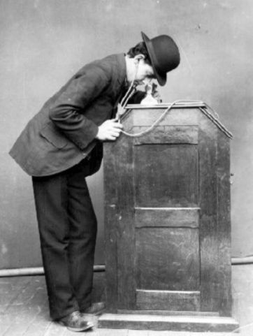

アメリカ人が映画の発明者として挙げるのは発明王
トーマス・エディソン

彼は1888年に、キネトスコープと呼ばれる覗き箱式の機械を発明しました。
↓現代の映画とは似ても似つかないですね。

キネトスコープWikipedia
では、最初にスクリーンに動画を映し出した人は
リュミエール兄弟

兄:オーギュスト・リュミエール 弟:ルイ・リュミエール
彼らは1895年に、シネマトグラフと呼ばれる手回し式の機械を発明します。
シネマトグラフWikipedia
12月28日 パリのグラン・カフェの地階「インドの間」にて世界最初の公開上映会を開催しました。
ここから、12月28日は映画の誕生日と呼ばれるようになりました。
それでは、お互いの作品を見ていきます。
[トーマス・エディソン]
「フレッド・オットのくしゃみ」...エディソンの助手であったフレッド・オットが煙草を一服してくしゃみをする姿を撮影したもの
「アナベルのサーペンタインダンス」...アナベル・ムーアというブロードウェイのダンサーの作品
「M・アーウィンとJ・C・ライスの接吻」...同年ブロードウェイで大ヒットした舞台のワンシーン
[リュミエール兄弟]
「工場の出口」...紡績工場の出口から次々仕事を終えた人達が帰宅するのを映した
「列車の到着」...画面右奥からやってくる機関車がどんどん迫る
「エカルテ遊び」...リュミエール家の庭での親睦会をしている様子
スクリーンで見た当時のお客さんは、奥からやってくる列車に慌てて席をたち逃げ出した伝説があります。
リュミエール兄弟の作品は、モネやセザンヌなどの印象派の影響を受けた作品に対し
エディソンの作品は、見世物を撮影し現場に行かずとも見られるようにした作品でした。
つまりこの二人の作品は
映画は芸術なのか、エンターテインメントなのか
今に通ずる対立が大昔から存在していたといえるかもしれません。